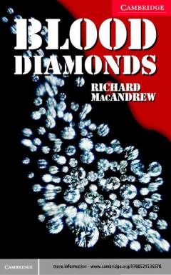

BDJurnalistlarning qonli olmoslar savdosi haqidagi xavfli surishtiruvi.
Jurnalistlar Xarli Kirkpatrik va Enni Shepherd qonli olmoslar savdosi ortidagi xavfli sirlarni fosh qilishga kirishadilar. Ular biznesmen Erik Van Delft va zargarlik do'koni egasi Sofi Lafon bilan bog'liq bo'lgan xalqaro jinoyat izidan borishadi. Bu hikoya olmos savdosining qorong'u tomonlari va jurnalistik surishtiruv jarayonini yoritadi.